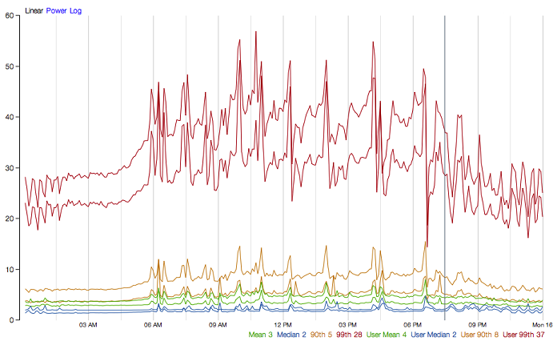
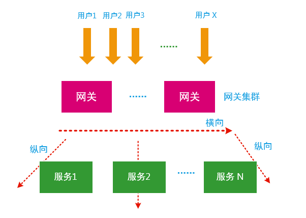
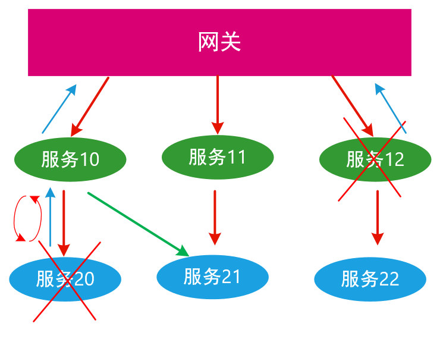
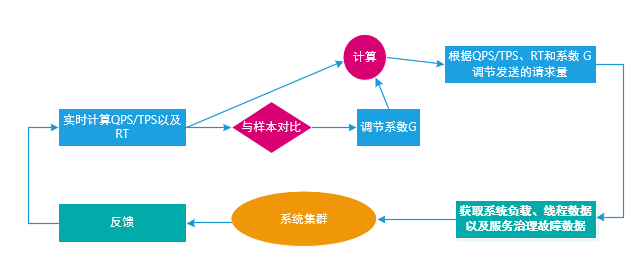

实现一个分布式系统通常会面临三大难题： 故障传播性、业务拆分与聚合以及分布式事务 。这里我将总结分布式系统中的服务治理模式，目的是为了解决分布式系统故障传播性的难题。
隔板模式
在分布式系统里通常将进程容器化以进行资源隔离，然后在同一个进程里的各种业务都共享线程池对外提供服务，这就经常会遇到这样的问题：
- 业务A负载较高，抢占了线程池里的大部分线程资源，从而造成其他业务的服务质量下降；
- 同一个进程内新加入一个业务，这个业务会抢占其他业务的资源，从而造成系统的不稳定，比如业务性能抖动；
- 难以调试，比如同一个进程里的10个业务共享同一个线程池，当出现故障时难以通过简单的日志判断是哪个业务出了问题。
因此，我们希望找出一个机制解决这样的问题，也就提出了隔板模式。在分布式系统里，资源隔离通常按业务分为进程级别的隔离和线程级别的隔离。进程级别隔离通常指的是容器化隔离，比如通过使用docker实现业务进程之间的资源隔离，某些简单的服务质量要求不高的业务场景下实现进程级别的隔离就够了，但是在某些对服务质量要求较高的分布式场景下需要线程级别的细粒度隔离。
线程级别隔离是指给每个跑在进程里的业务都按业务类型创建一个线程池，从而实现线程级别细粒度的资源隔离，提高业务可靠性，减少业务受其他业务影响的程度，并降低新加入的业务的给系统带来的风险。线程隔离还利于我们调试，给每一个业务都分配一个线程池名称，当业务出故障时，通过线程池名称可以很方便地定位是哪个业务出了故障，并且通过监控线程池的请求失败次数、超时次数、拒绝请求次数等可以实时的反应当前业务服务质量。当然，事物都有二元性，线程池隔离，有利自然也有弊，线程池隔离也会引入额外的一些开销。下面是Hystrix官网对线程池开销成本的相关统计：

熔断模式
分布式系统里经常会遇到这样的场景：
- 系统负载突然过高，比如突发的访问量、过多的请求并发数以及过多的IO等都会造成某个节点故障，比如节点A，然后节点A挂了，又把负载转给节点B，然后节点B又负载过高，接着B又挂了，就这样一连串的挂过去从单点故障造成系统级的级联故障。
- 当一个服务出现故障时，希望这个服务能在一个时间段内恢复，在请求被拒绝后隔一段时间再自动的去探测服务的可服务性。
对应这两个场景，我们希望在分布式系统里能避免级联故障、提供快速失败快速恢复服务的能力，也就提出了熔断模式。
熔断模式也称之为断路器模式，当系统里响应时间或者异常比率或者异常数超过某个阈值时，比如超时次数或重试次数超过某个阈值就会触发熔断，接着所有的调用都快速失败，从而保证下游系统的负载安全，在断开一段时间后，熔断器又打开一点试着让部分请求负载通过，如果这些请求成功那么断路器就恢复正常工作，如果继续失败，则继续关闭服务走快速失败通道，接着继续这个过程直到重试的次数超过一定的阈值从而触发更为严重的“降级模式”，熔断模式的设计思路由下面给出：

降级模式
我们来看看降级模式提出的动机：
- 某些时候系统会遇到负载过高的问题，当系统外来的或内部的负载过高超过预先定义的阈值，为了保证更重要的更紧急的业务的服务质量，希望将一些非核心的、不紧急的业务降低服务质量，从而释放一些额外的资源给紧急业务使用。
- 在云服务里“可用性”是一个非常重要指标，我们希望分布式系统不管出现怎么样的故障，比如服务器故障，磁盘故障，网络故障都能保持可用性，起码要保证单点故障不会造成系统故障，比如，在系统出现严重故障的时候，可以停止负载较高的写操作从而保证“读”或者“查询“服务。
降级的触发策略如下：
- 超时降级：在超时重试的次数达到一个阈值后就触发降级；
- 失败比率降级：当某个服务的失败的比率达到一定比率后就开始降级；
- 系统故障降级：比如网络故障，硬盘故障，电源故障，服务器故障，数据中心故障等；
- 限流降级：某些访问量太大的场景会触发限流，当达到限流阈值后，请求也会被降级；
- 重要业务救急降级：比如为了保证读或者查询的功能，降低写或者数据校验的资源配额，从而实现读服务的质量保证。
一般来说，降级处理可以采取以下方式：
- 资源配额调度，调度不紧急的业务支援紧急的重要的业务；
- 直接返回， 直接返回拒绝服务，这里请求也会丢失，这在需要保证幂等性的请求里不合适；
- 抛出异常，直接抛出异常，打印出出错日志，然后就不管了，请求会丢失，这在需要保证幂等性的请求里不合适；
- 调用回退方法，调用出现服务降级时对应的业务处理逻辑，不同场景降级处理的逻辑不同，比如可以把请求再挂到等待队列里继续重试之类，这里需要根据业务场景合理设计回退方法。
一般可以把降级的等级分为几个层次：P0级，P1级，P2级，P3级，级别越高表示问题越严重， 比如：
- 重要业务救急降级可以定义为P0级降级，只是调度次要的资源去救急，并不会出现故障；
- 限流降级可以定义为P1级降级，只是为了保证服务质量，而且如果不限流可能会出现系统负载过高从而出现故障；
- 超时降级以及失败比率降级可以定义为P2级降级，出现小范围故障，触发P2级降级，保证小故障不蔓延不传播从而造成大范围的故障；
- 系统故障降级可以定义为P3级降级，系统出现大范围故障，从而触发P3级降级，比如，此时可以只保证最低资源的的读请求服务，写和其他业务全部被禁止。
限流模式
在分布式系统里，每个系统都有自己的容量限制，它所能处理的业务请求能力是有限的，如果不控制这些输入的请求数，突发输入过多的请求量会造成过度的资源竞争从而引发系统故障降低系统的可靠性，因此我们提出了限流模式。限流有利于控制系统资源的消耗速率有利于过载保护，有利于保护业务资源不被耗尽。
限流其原理是监控输入的请求量，当达到指定的阈值时对量进行控制，以避免系统被瞬时的请求量高峰冲垮，从而保障系统的高可用、高可靠。在分布式系统里，限流处理通常有以下几种策略：
- 直接拒绝：当请求量超过阈值后，新的请求就会被直接拒绝，方式为直接返回或者抛出异常。这种方式比较适合于对分布式系统的负载容量已知的情况下，比如通过全链路压测已经确定了准确的系统处理能力及系统容量，对应固定窗口、滑动窗口算法。
- 冷启动：当分布式系统长期处于低负载的情况下，请求量突发时，会把系统负载很快拉到很高的水准，这样就可能瞬间就把系统击垮。通过”冷启动”方式，让输入的请求量缓慢增加，在一个时间段内慢慢增加到系统所能承载的阈值上限，给冷系统一个预热的时间，避免系统被压垮，对应令牌桶算法。
- 匀速排队：匀速排队的方式也就是控制请求以均匀的速率通过，对应的是漏桶算法。
限流通常可以按空间维度划分为纵向限流以及横向限流，常用的纵向限流算法有：固定窗口、滑动窗口、令牌桶算法以及漏桶算法。常用的横向限流算法有计数算法以及时间标签算法。

容错模式
在分布式系统里，系统里出现故障时需要进行出错处理，当执行熔断或降级处理策略时，通常也需要有相应的重试处理策略，为了保证高可用以及高可靠性，也需要相应的超时处理策略，而这些策略又需要根据不同的业务场景进行设计。

以Dubbo框架为例，容错模式常采取以下几种策略：
Failover 失败切换
在分布式系统里，为了保证高可用性以及高可靠性，通常会对服务或者设备进行冗余，当一个服务或者设备出现故障时，就直接切换到另外一个服务或设备上，这种设计模式叫做故障切换。
如上图所示，服务10本来是路由到服务20的，当服务20出现故障时，从服务10路由到服务20的请求，服务20并没办法处理，这时候服务10收到一个请求超时的返回，发现服务20没法处理这个请求，为了保证高可用性，服务10的请求就被路由到服务21，从而保证了服务的高可用与可靠性，这个过程用户是不感知的。
Failfast 快速失败
快速失败是指当发现服务请求调用失败时，就立即上报故障，快速失败的一个重要目的是用于检测错误以便降低出错成本为系统提供足够的信息来保证高可用与高可靠，这个过程用户是感知的。
比如上图中服务20出现故障就快速上报故障给服务10，然后服务10就可以采用Failover策略将服务请求切换到服务21，从而避免更多的不可用时间。
Failback 失败恢复
Failback跟Failover有点类似，但是Failover是发现故障时就把请求切换到别的服务或设备上去，而Failback是在发现下游的故障后，把请求扔到一个临时的设备或者服务或者组件（比如队列）上，然后待下游故障修复后，重新同步数据以及请求，把这些数据或者请求还原到原来的服务或者设备上。比如上图所示，在服务20出现故障后，服务10发过来的请求被放到一个临时的队列里，然后在服务20在一定的时间内被恢复后，又把这些请求从队列中恢复发到服务20，这个过程用户时不感知的。
Failsafe 静默处理
FailSafe是指系统出现故障时可以直接忽略这个故障，不进行相应的故障处理，在Failsafe的场景下，故障不会给系统带来伤害，对服务质量也不会有什么影响，简单的处理方式就是把故障的信息写到日志里保存。
Forking 请求分叉
在Forking策略下，将请求进行裂变下发，只要一个请求处理成功整体请求就成功。比如上图所示，一个读请求到网关后被分裂成同样的请求三份，然后这三个请求被下发到服务10，11，12，只要有一个请求处理成功就返回成功。
自适应模式
自适应性技术是指分布式系统能够在运行过程中根据环境变化和系统状态做出相应的调整和改变,以保持高性能和可靠性。对于自适应模式，我们希望在分布式系统里体现有限资源下的平衡，在系统健康的前提下，极致的使运用系统负载的能力，同时又保证不会主动造成系统故障，如果发现系统内部出现故障，又会自动调整下发的负载压力，这就是系统自适应保护。
下图表示了一个自适应算法，造成系统负载过高以及故障传播的因素很多，比如不合适的线程数、TPS或QPS过大、返回时间过长都有可能，通过合适的算法可以自动调整下发的压力从而保持系统的内部资源平衡。

通过采用系统自适应算法在系统的入口处，实时采集QPS/TPS以及RT， 然后跟最佳样本值进行比较，依据调节系数进行计算，再调节发送的请求量，发送请求后又采集造成的影响，再反馈在系统入口处。其中，样本值可以在系统启动时按动态采样的方式计算，逐渐增加QPS ，当发现时延发生转折时，我们就确定这个转折点为分布式系统自适应最佳平衡点，记下该值作为当前样本。